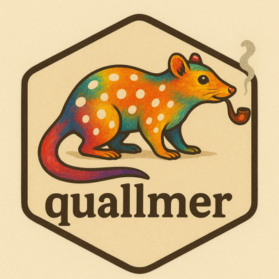

Example: Google translation of a multilingual corpus
example_translation_google.RmdGoogle’s specialised Translation
LLM can translate a multilingual corpus into a common language using
qlm_translate(). This example translates six complete
versions of the Universal Declaration of Human Rights (UDHR) into
British English, retains the source texts and translation records, and
converts the result back to a quanteda corpus.
The output below comes from a saved Google API run on 17 October 2026. Routine site builds load the saved results and execute the inspection, corpus conversion and validation code without making API calls. Project identifiers in the published fixture have been replaced with placeholders; source texts, translations and their hashes are unchanged. Live mode reruns the six-document translation against Google. Installation and credential setup remain manual. Live translation requests are billed to your Google Cloud project.
Set up Google Cloud
Follow Google’s Cloud Translation setup guide. You need a project with billing enabled, the Cloud Translation API enabled, and an API key that permits access to that API.
- Create or select a project in the Google Cloud console. Record its project ID, which can differ from its display name.
- Under APIs & Services → Library, find Cloud Translation API and enable it.
- Under APIs & Services → Credentials, create an API key. Give it a name such as Translation, and restrict its allowed APIs to Cloud Translation API.
- Copy the key using Show key in the Credentials list.
Enabling the API for a project and allowing a key to call it are separate settings. A key restricted to Gemini does not authorise Cloud Translation. A dedicated translation key makes the intended access clear.
Quallmer’s model identifier is
"google-translate/translation-llm". It selects Google’s
standard general/translation-llm model through the Cloud
Translation Basic API, which accepts API-key authentication.
Save credentials
Use the system keyring
Save the API key once with the optional keyring package:
install.packages("keyring") # once, if needed
keyring::key_set("google-translate")Paste the API key at the password prompt. A successful save normally
produces no printed output. On macOS, the key is stored in Keychain;
access may prompt you to unlock or permit access to the entry. No
.Renviron entry is needed for this key.
Set the project separately. The project ID is configuration, not a secret:
library(quallmer)
Sys.setenv(GOOGLE_CLOUD_PROJECT = "your-project-id")Use environment variables
The default key variable is
GOOGLE_TRANSLATE_API_KEY. If you prefer
environment variables, these lines can go in your home
~/.Renviron:
GOOGLE_CLOUD_PROJECT=your-project-id
GOOGLE_TRANSLATE_API_KEY=your-api-keyReplace the placeholders and restart R. This file stores the key as
plain text; keep it outside version control. .Renviron
contains assignments, so do not put keyring::key_get()
calls in it. R started with --vanilla does not read this
file.
Credential precedence is:
| Source | How it is supplied |
|---|---|
| Explicit key |
api_key = ... in
qlm_translate()
|
| Environment | GOOGLE_TRANSLATE_API_KEY |
| Optional keyring fallback | keyring::key_get("google-translate") |
An environment variable takes precedence over the keyring entry. If it contains an old key, remove or update it before testing a newly saved key. Quallmer does not copy retrieved keys into the environment or translation provenance.
An explicit argument also lets you use your own environment-variable name:
greeting <- qlm_translate(
c(fr = "Bonjour, comment allez-vous ?"),
model = "google-translate/translation-llm",
to = "en-GB",
project_id = "your-project-id",
api_key = Sys.getenv("MY_TRANSLATION_KEY")
)Check access with a short vector
Before sending full documents, translate two short texts. This call uses the project environment variable and resolves the API key automatically:
greetings <- qlm_translate(
c(fr = "Bonjour tout le monde.", de = "Guten Morgen."),
model = "google-translate/translation-llm",
to = "en-GB"
)
greetingsThe result is a qlm_translation: a character vector of
translations named after the inputs, with NA for any
failure. attr(greetings, "provenance") holds the record of
each translation, including the reason for a failure.
as.character(greetings) drops that record.
Select six complete UDHR documents
The quanteda.corpora
package contains data_corpus_udhr, a collection of UDHR
texts in many languages. Install the example packages if needed:
install.packages(c("quanteda", "remotes"))
remotes::install_github("quanteda/quanteda.corpora")Load quanteda before subsetting the corpus, then select German, French, Spanish, Simplified Chinese, Hindi and Russian. These are complete documents, including their headings and preambles:
library(quanteda)
udhr_ids <- c("deu_1996", "fra", "spa", "cmn_hans", "hin", "rus")
udhr <- quanteda.corpora::data_corpus_udhr[udhr_ids]
knitr::kable(data.frame(
.id = docnames(udhr),
language = docvars(udhr)$Name,
characters = unname(nchar(as.character(udhr)))
), row.names = FALSE)| .id | language | characters |
|---|---|---|
| deu_1996 | German, Standard (1996) | 11934 |
| fra | French | 11936 |
| spa | Spanish | 11900 |
| cmn_hans | Chinese, Mandarin (Simplified) | 2906 |
| hin | Hindi | 10923 |
| rus | Russian | 11758 |
The source corpus also has four document variables: Key,
Name, ISO and Direction. They
describe the original documents and remain available after
translation.
Translate the corpus into English
Omit from to let Google detect each document’s language
independently:
google_timing <- system.time(
google_translated <- qlm_translate(
udhr,
model = "google-translate/translation-llm",
to = "en-GB",
on_error = "continue"
)
)
google_timing
google_translated## <qlm_translation: 6 translations; model google-translate/translation-llm; target en-GB>
## deu_1996: Preamble Whereas recognition of the inherent dignity and of the equ...
## fra: Preamble Whereas recognition of the inherent dignity and of the equal an...
## spa: Preamble Whereas recognition of the inherent dignity and of the equal an...
## cmn_hans: Preamble Whereas recognition of the inherent dignity and of the equ...
## hin: Preamble Whereas recognition of the inherent dignity and of the equal an...
## rus: PREAMBLE Whereas recognition of the inherent dignity and of the equal an...Each of these documents fits in a single request. The adapter sends
one document per request, defaulting to two concurrent requests and
pacing submissions according to rpm. It splits a larger
document only when needed to fit its 30,000-character or 100 kB
JSON-body limit, or when you request a smaller chunk_size.
See Google’s quotas and
limits. Google handles paragraph formatting; exact original
blank-line separators are not guaranteed.
from is a call-wide setting. For a homogeneous selection
you can supply, for example, from = "fr"; automatic
source-language detection is then not performed. Leave it unset for this
six-language selection.
The model location defaults to region = "us-central1";
pass another as
qlm_translate(..., region = "europe-west4"). You can also
supply project_id directly instead of setting
GOOGLE_CLOUD_PROJECT. The Basic API uses a global endpoint,
so the model location alone does not guarantee where data is processed.
See Google’s data usage
FAQ.
Inspect translations and provenance
The original corpus is retained separately from the translated output:
## [1] TRUE
knitr::kable(data.frame(
.id = names(google_translated),
excerpt = substr(as.character(google_translated), 1, 120)
), row.names = FALSE)| .id | excerpt |
|---|---|
| deu_1996 | Preamble |
Whereas recognition of the inherent dignity and of the equal and inalienable rights of all members of the huma | |fra |Preamble
Whereas recognition of the inherent dignity and of the equal and inalienable rights of all members of the huma | |spa |Preamble
Whereas recognition of the inherent dignity and of the equal and inalienable rights of all members of the huma | |cmn_hans |Preamble
Whereas recognition of the inherent dignity and of the equal and inalienable rights of all members of the huma | |hin |Preamble
Whereas recognition of the inherent dignity and of the equal and inalienable rights of all members of the huma | |rus |PREAMBLE
Whereas recognition of the inherent dignity and of the equal and inalienable rights of all members of the huma |
google_provenance <- attr(google_translated, "provenance")
knitr::kable(google_provenance[c(
".id", "status", "detected_language", ".error", "reported_model"
)], row.names = FALSE)| .id | status | detected_language | .error | reported_model |
|---|---|---|---|---|
| deu_1996 | ok | de | NA | translation-llm |
| fra | ok | fr | NA | translation-llm |
| spa | ok | es | NA | translation-llm |
| cmn_hans | ok | zh | NA | translation-llm |
| hin | ok | hi | NA | translation-llm |
| rus | ok | ru | NA | translation-llm |
These language detections come from the recorded responses;
subsequent API responses can differ. The ISO docvar uses
the original corpus’s three-letter codes, whereas Google returned the
codes above. Both are retained. Translation provenance also records the
source text, source and output hashes, requested model and settings, and
attempts. Detected language is Google’s assessment of the supplied
document; it is not a language label for the translated output, whose
requested language is en-GB.
For bilingual review, place original and translated texts side by side:
review <- data.frame(
.id = names(google_translated),
source = unname(as.character(inputs(google_translated))),
translation = unname(as.character(google_translated))
)
review_preview <- review
review_preview[c("source", "translation")] <- lapply(
review_preview[c("source", "translation")], substr, start = 1, stop = 150
)
knitr::kable(review_preview[review_preview$.id == "hin", ], row.names = FALSE)| .id | source | translation |
|---|---|---|
| hin | प्रस्तावना |
चूंकि मानव परिवार के सभी सदस्यों के जन्मजात गौरव और समान तथा अविच्छिन्न अधिकार की स्वीकृति ही विश्व-शान्ति, न्याय और स्वतन्त्रता की बुनिया |Preamble
Whereas recognition of the inherent dignity and of the equal and inalienable rights of all members of the human family is the foundation of |
results_file <- file.path(tempdir(), "udhr-google-english.rds")
saveRDS(google_translated, results_file)Saving the result retains the exact translated texts and provenance for reuse; rerunning a model alias later may produce different wording. This example writes to a temporary directory; choose a permanent path when saving it for analysis.
Convert back to a corpus
Convert the translations with quanteda’s corpus():
## [1] "deu_1996" "fra" "spa" "cmn_hans" "hin" "rus"
docvars(google_corpus)## Key Name ISO Direction
## 1 deu_1996 German, Standard (1996) deu ltr
## 2 fra French fra ltr
## 3 spa Spanish spa ltr
## 4 cmn_hans Chinese, Mandarin (Simplified) cmn ltr
## 5 hin Hindi hin ltr
## 6 rus Russian rus ltr## [1] TRUE## [1] TRUE## .id status detected_language
## 1 deu_1996 ok de
## 2 fra ok fr
## 3 spa ok es
## 4 cmn_hans ok zh
## 5 hin ok hi
## 6 rus ok ruThe corpus contains the English translations, with the same document
names and original document variables. Its original system and user
metadata are restored; text summary caches are cleared. The
quallmer user-metadata field holds the translation
provenance.
You can then use ordinary quanteda operations. For example, the source-language docvar identifies the translation made from Hindi:
hindi_english <- corpus_subset(google_corpus, ISO == "hin")
cat(substr(as.character(hindi_english)[[1]], 1, 400), "\n")## Preamble
##
## Whereas recognition of the inherent dignity and of the equal and inalienable rights of all members of the human family is the foundation of freedom, justice and peace in the world,
## Whereas disregard and contempt for human rights have resulted in barbarous acts which have outraged the conscience of mankind, and the advent of a world in which human beings shall enjoy freedom of speech and## deu_1996 fra spa cmn_hans hin rus
## 1737 1761 1762 1746 1726 1758Quanteda is optional for qlm_translate() itself; it is
used here to load, subset and analyse the example corpus. A named
character vector works without it, as the greeting example illustrates.
Text outputs of qlm_code() can also be converted, using
quanteda::corpus(coded, text_field = "summary").
Inspect failures and retry selected documents
With on_error = "continue", successful translations
remain available when another request fails. A failed or unsubmitted
document is NA. Inspect the recorded errors before
retrying:
google_provenance[google_provenance$status != "ok", c(".id", "status", ".error")]
failed <- is.na(google_translated)
if (any(failed)) {
retried <- qlm_translate(
inputs(google_translated)[failed],
model = "google-translate/translation-llm",
to = "en-GB",
on_error = "continue"
)
google_translated[failed] <- retried
}For a 403 Forbidden response, check both API enablement and the key’s API restrictions in the project that owns the key. Also check that you are using its project ID and have billing enabled. If the key was recently changed, allow time for its restrictions to take effect. Google documents the blocked-service error in its authentication troubleshooting guide.
This adapter exposes the standard Translation LLM through the Basic
API. It rejects context, instructions,
glossary and non-empty params because these
options are not supported on this route. The result records the model
Google reports; it does not pin a permanent model version.
The translations can be passed directly to qlm_code(),
which records translation as a preprocessing stage. See Translating before coding for that
workflow.
Run this article as a live check
Routine builds check the saved output, its hashes and the conversion workflow. They do not establish that current credentials or Google’s service work. Unit tests mock responses to check request construction, error handling and metadata preservation. Live verification executes this article’s actual UDHR chunks against Google, checks all six results, source-language detections, retained inputs, restored corpus metadata and tokenization, and produces an HTML page containing the real output. These checks establish that the workflow ran successfully; bilingual review is still needed to assess fidelity.
From a local checkout of quallmer, after installing the example packages and saving your key, run:
Sys.setenv(GOOGLE_CLOUD_PROJECT = "your-project-id")
source("dev/translation-google-udhr-live-check.R")The script loads the checkout, renders with
params = list(live = TRUE), retains
google_translated, google_provenance and
google_corpus in your session, and saves the translated
object and rendered page in a temporary results directory. It prints
their paths and stops with an error if an assertion fails. It does not
install packages, save credentials or automatically run the retry
example.
You can also render the article directly after loading the package:
rmarkdown::render(
"vignettes/pkgdown/examples/example_translation_google.Rmd",
params = list(live = TRUE),
output_dir = tempdir()
)To replace the published fixture after reviewing a fresh live run, enable the refresh option before running the script:
options(quallmer.update_google_article_cache = TRUE)
source("dev/translation-google-udhr-live-check.R")
options(quallmer.update_google_article_cache = NULL)This explicitly updates data/translated_udhr_google.rds
beside the article, using the new real results with project identifiers
replaced by placeholders. Normal site builds only read this fixture.